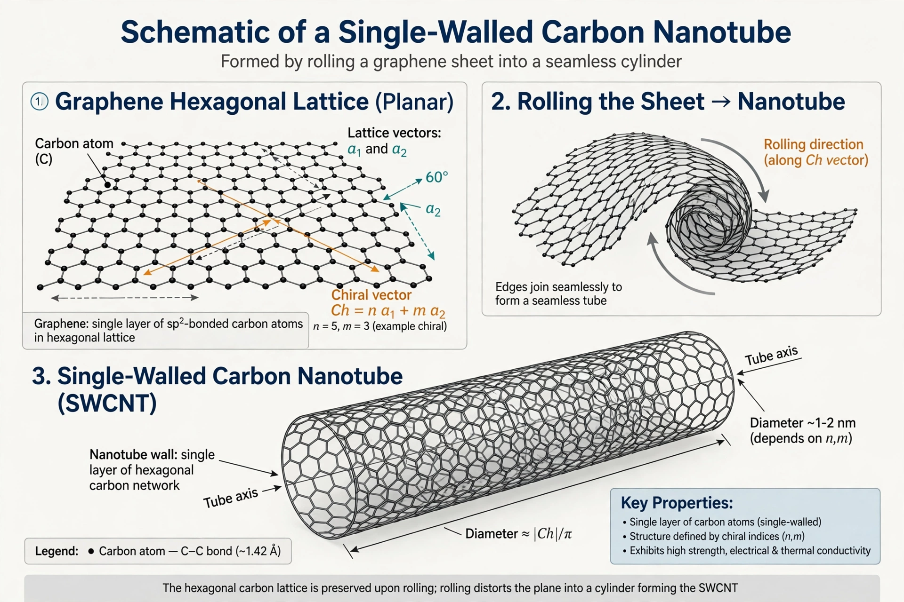

Carbon nanotube

Carbon nanotubes (CNTs) are cylindrical molecules consisting of rolled-up sheets of single-layer carbon atoms (graphene). They can be single-walled (SWCNT), with diameters around 0.5–2 nanometres, or multi-walled (MWCNT), consisting of nested tubes. Nanotubes were brought to wide attention by Sumio Iijima's 1991 paper describing multi-walled tubes, and they remain among the most studied nanomaterials because of their exceptional strength, electrical conductivity, and thermal conductivity.
| Type | Carbon allotrope / nanomaterial |
|---|---|
| Diameter | ~0.5 nm (SWCNT) to tens of nm (MWCNT) |
| Tensile strength | Up to ~100 GPa (individual tubes) |
| Discovered | 1991 (Iijima, multi-walled); 1993 (single-walled) |
Structure and properties
A nanotube is characterised by its chiral vector, which describes how the graphene sheet is rolled; depending on the rolling direction the tube may be "armchair", "zigzag", or "chiral". This geometry determines whether the tube behaves as a metal or a semiconductor. Individual nanotubes have a Young's modulus around 1 terapascal and tensile strengths far exceeding steel at a fraction of the weight, and they can carry very high current densities.
Synthesis
Nanotubes are produced by arc discharge, laser ablation, and, most commonly at industrial scale, chemical vapour deposition (CVD), in which a carbon-containing gas decomposes over metal catalyst particles. Controlling the diameter, length, and chirality of the product remains a central challenge.
Applications
Commercial uses include conductive additives in lithium-ion battery electrodes, polymer composites for sports goods and automotive and aerospace parts, and conductive films. Research applications include field-effect transistors, sensors, and drug delivery. Health questions concerning long, rigid multi-walled nanotubes — which can resemble asbestos fibres — have led to continuing study of nanotube toxicology.